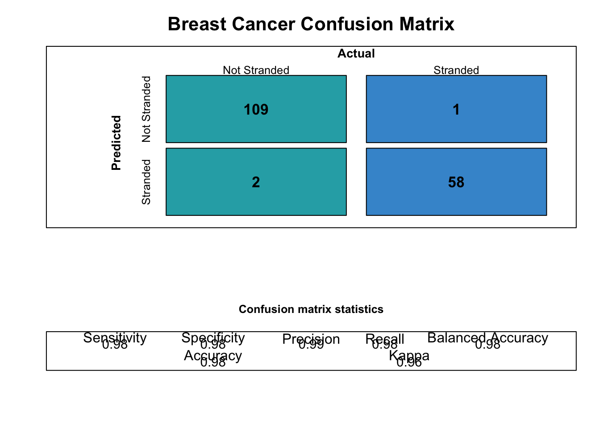

This notebook was generated following documentation provideded by Hutson (2024).
start_time <- Sys.time()library(expss)library(caret)
library(dplyr)
library(mlbench)
library(tidyr)
library(e1071)
library(randomForest)
# Load in the iris data set for this problem
data(iris)
df <- iris
# View the class distribution, as this is a multiclass problem, we can use the multi-uclassification data table builder
table(iris$Species)##
## setosa versicolor virginica
## 50 50 50mt_features_df <- read.table("./data/mt_dcast_2.txt", header = T)
dim(mt_features_df)## [1] 17 5Make origin factor
mt_features_df$origin <- as.factor(mt_features_df$origin)
mt_features_df <- mt_features_df %>% select(-c("GenBankID"))Splitting the data into train and test splits:
train_split_idx <- caret::createDataPartition(df$Species, p = 0.75, list = FALSE)
# Here we define a split index and we are now going to use a multiclass ML model to fit the data
train <- df[train_split_idx, ]
test <- df[-train_split_idx, ]
str(train)## 'data.frame': 114 obs. of 5 variables:
## $ Sepal.Length: num 5.1 4.7 4.6 5 5.4 4.4 4.9 5.4 4.8 4.3 ...
## $ Sepal.Width : num 3.5 3.2 3.1 3.6 3.9 2.9 3.1 3.7 3.4 3 ...
## $ Petal.Length: num 1.4 1.3 1.5 1.4 1.7 1.4 1.5 1.5 1.6 1.1 ...
## $ Petal.Width : num 0.2 0.2 0.2 0.2 0.4 0.2 0.1 0.2 0.2 0.1 ...
## $ Species : Factor w/ 3 levels "setosa","versicolor",..: 1 1 1 1 1 1 1 1 1 1 ...# Loading caret library
require(caret)
# Splitting the data into train and test
index <- createDataPartition(mt_features_df$origin, p = .60, list = FALSE)
train_mt <- mt_features_df[index, ]
train_mt## origin MT_16069_BP MT_16086_BP MT_16093_BP
## 1 America 1 1 1
## 2 America 1 1 1
## 4 America 1 1 1
## 6 America 1 1 1
## 8 America 1 1 1
## 9 America 1 1 1
## 10 Africa 0 0 0
## 12 Africa 0 0 0
## 14 Africa 0 0 0
## 15 Africa 0 0 0
## 16 Africa 0 0 0cross_cases(train_mt, origin)| #Total | |
|---|---|
| origin | |
| Africa | 5 |
| America | 6 |
| #Total cases | 11 |
test_mt <- mt_features_df[-index, ]
test_mt## origin MT_16069_BP MT_16086_BP MT_16093_BP
## 3 America 1 1 1
## 5 America 1 1 1
## 7 America 1 1 1
## 11 Africa 0 0 0
## 13 Africa 0 0 0
## 17 Africa 0 0 0This now creates a 75% training set for training the ML model and we are going to use the remaining 25% as validation data to test the model.
rf_model <- caret::train(Species ~ .,
data = df,
method = "rf",
metric = "Accuracy")
rf_model## Random Forest
##
## 150 samples
## 4 predictor
## 3 classes: 'setosa', 'versicolor', 'virginica'
##
## No pre-processing
## Resampling: Bootstrapped (25 reps)
## Summary of sample sizes: 150, 150, 150, 150, 150, 150, ...
## Resampling results across tuning parameters:
##
## mtry Accuracy Kappa
## 2 0.9615553 0.9412811
## 3 0.9592774 0.9377922
## 4 0.9607177 0.9400049
##
## Accuracy was used to select the optimal model using the largest value.
## The final value used for the model was mtry = 2.rf_model_mt <- caret::train(origin ~ .,
data = train_mt,
method = "rf",
metric = "Accuracy")## note: only 2 unique complexity parameters in default grid. Truncating the grid to 2 .## Warning in nominalTrainWorkflow(x = x, y = y, wts = weights, info = trainInfo,
## : There were missing values in resampled performance measures.rf_model_mt## Random Forest
##
## 11 samples
## 3 predictor
## 2 classes: 'Africa', 'America'
##
## No pre-processing
## Resampling: Bootstrapped (25 reps)
## Summary of sample sizes: 11, 11, 11, 11, 11, 11, ...
## Resampling results across tuning parameters:
##
## mtry Accuracy Kappa
## 2 1 1
## 3 1 1
##
## Accuracy was used to select the optimal model using the largest value.
## The final value used for the model was mtry = 2.The model is relatively accurate. This is not a lesson on machine learning, however we now know how well the model performs on the training set, we need to validate this with a confusion matrix. The Random Forest shows that it has been trained on greater than >2 classes so this moves from a binary model to a multi-classification model. The functions contained in the package work with binary and multiclassification methods.
The native confusion matrix is excellent in CARET, however it is stored as a series of list items that need to be utilised together to compare model fit performance over time to make sure there is no underlying feature slippage and regression in performance. This is where my solution comes in.
rf_class is a factor created using the predict() function
preditions is a data-frame constructed with the two columns used for the confusionMatrix() function.
rf_class <- predict(rf_model, newdata = test, type = "raw")
predictions <- cbind(data.frame(train_preds=rf_class,
test$Species))
# Create a confusion matrix object
cm <- caret::confusionMatrix(predictions$train_preds, predictions$test.Species)
cm## Confusion Matrix and Statistics
##
## Reference
## Prediction setosa versicolor virginica
## setosa 12 0 0
## versicolor 0 12 0
## virginica 0 0 12
##
## Overall Statistics
##
## Accuracy : 1
## 95% CI : (0.9026, 1)
## No Information Rate : 0.3333
## P-Value [Acc > NIR] : < 2.2e-16
##
## Kappa : 1
##
## Mcnemar's Test P-Value : NA
##
## Statistics by Class:
##
## Class: setosa Class: versicolor Class: virginica
## Sensitivity 1.0000 1.0000 1.0000
## Specificity 1.0000 1.0000 1.0000
## Pos Pred Value 1.0000 1.0000 1.0000
## Neg Pred Value 1.0000 1.0000 1.0000
## Prevalence 0.3333 0.3333 0.3333
## Detection Rate 0.3333 0.3333 0.3333
## Detection Prevalence 0.3333 0.3333 0.3333
## Balanced Accuracy 1.0000 1.0000 1.0000rf_class_mt <- predict(rf_model_mt, newdata = test_mt, type = "raw")
predictions_mt <- cbind(data.frame(train_preds=rf_class_mt,
test_mt$origin))
# Create a confusion matrix object
cm_mt <- caret::confusionMatrix(predictions_mt$train_preds, predictions_mt$test_mt.origin)
cm_mt## Confusion Matrix and Statistics
##
## Reference
## Prediction Africa America
## Africa 3 0
## America 0 3
##
## Accuracy : 1
## 95% CI : (0.5407, 1)
## No Information Rate : 0.5
## P-Value [Acc > NIR] : 0.01563
##
## Kappa : 1
##
## Mcnemar's Test P-Value : NA
##
## Sensitivity : 1.0
## Specificity : 1.0
## Pos Pred Value : 1.0
## Neg Pred Value : 1.0
## Prevalence : 0.5
## Detection Rate : 0.5
## Detection Prevalence : 0.5
## Balanced Accuracy : 1.0
##
## 'Positive' Class : Africa
## # Implementing function to collapse data
library(ConfusionTableR)
mc_df <- ConfusionTableR::multi_class_cm(predictions$train_preds, predictions$test.Species,
mode="everything")
# Access the reduced data for storage in databases
print(mc_df$record_level_cm)## setosa : setosa setosa : versicolor setosa : virginica versicolor : setosa
## 1 12 0 0 0
## versicolor : versicolor versicolor : virginica virginica : setosa
## 1 12 0 0
## virginica : versicolor virginica : virginica Accuracy Kappa AccuracyLower
## 1 0 12 1 1 0.9026062
## AccuracyUpper AccuracyNull AccuracyPValue McnemarPValue setosa : Sensitivity
## 1 1 0.3333333 6.662463e-18 NaN 1
## setosa : Specificity setosa : Pos Pred Value setosa : Neg Pred Value
## 1 1 1 1
## setosa : Precision setosa : Recall setosa : F1 setosa : Prevalence
## 1 1 1 1 0.3333333
## setosa : Detection Rate setosa : Detection Prevalence
## 1 0.3333333 0.3333333
## setosa : Balanced Accuracy versicolor : Sensitivity versicolor : Specificity
## 1 1 1 1
## versicolor : Pos Pred Value versicolor : Neg Pred Value
## 1 1 1
## versicolor : Precision versicolor : Recall versicolor : F1
## 1 1 1 1
## versicolor : Prevalence versicolor : Detection Rate
## 1 0.3333333 0.3333333
## versicolor : Detection Prevalence versicolor : Balanced Accuracy
## 1 0.3333333 1
## virginica : Sensitivity virginica : Specificity virginica : Pos Pred Value
## 1 1 1 1
## virginica : Neg Pred Value virginica : Precision virginica : Recall
## 1 1 1 1
## virginica : F1 virginica : Prevalence virginica : Detection Rate
## 1 1 0.3333333 0.3333333
## virginica : Detection Prevalence virginica : Balanced Accuracy
## 1 0.3333333 1
## cm_ts
## 1 2024-07-01 11:24:32glimpse(mc_df$record_level_cm)## Rows: 1
## Columns: 50
## $ `setosa : setosa` <int> 12
## $ `setosa : versicolor` <int> 0
## $ `setosa : virginica` <int> 0
## $ `versicolor : setosa` <int> 0
## $ `versicolor : versicolor` <int> 12
## $ `versicolor : virginica` <int> 0
## $ `virginica : setosa` <int> 0
## $ `virginica : versicolor` <int> 0
## $ `virginica : virginica` <int> 12
## $ Accuracy <dbl> 1
## $ Kappa <dbl> 1
## $ AccuracyLower <dbl> 0.9026062
## $ AccuracyUpper <dbl> 1
## $ AccuracyNull <dbl> 0.3333333
## $ AccuracyPValue <dbl> 6.662463e-18
## $ McnemarPValue <dbl> NaN
## $ `setosa : Sensitivity` <dbl> 1
## $ `setosa : Specificity` <dbl> 1
## $ `setosa : Pos Pred Value` <dbl> 1
## $ `setosa : Neg Pred Value` <dbl> 1
## $ `setosa : Precision` <dbl> 1
## $ `setosa : Recall` <dbl> 1
## $ `setosa : F1` <dbl> 1
## $ `setosa : Prevalence` <dbl> 0.3333333
## $ `setosa : Detection Rate` <dbl> 0.3333333
## $ `setosa : Detection Prevalence` <dbl> 0.3333333
## $ `setosa : Balanced Accuracy` <dbl> 1
## $ `versicolor : Sensitivity` <dbl> 1
## $ `versicolor : Specificity` <dbl> 1
## $ `versicolor : Pos Pred Value` <dbl> 1
## $ `versicolor : Neg Pred Value` <dbl> 1
## $ `versicolor : Precision` <dbl> 1
## $ `versicolor : Recall` <dbl> 1
## $ `versicolor : F1` <dbl> 1
## $ `versicolor : Prevalence` <dbl> 0.3333333
## $ `versicolor : Detection Rate` <dbl> 0.3333333
## $ `versicolor : Detection Prevalence` <dbl> 0.3333333
## $ `versicolor : Balanced Accuracy` <dbl> 1
## $ `virginica : Sensitivity` <dbl> 1
## $ `virginica : Specificity` <dbl> 1
## $ `virginica : Pos Pred Value` <dbl> 1
## $ `virginica : Neg Pred Value` <dbl> 1
## $ `virginica : Precision` <dbl> 1
## $ `virginica : Recall` <dbl> 1
## $ `virginica : F1` <dbl> 1
## $ `virginica : Prevalence` <dbl> 0.3333333
## $ `virginica : Detection Rate` <dbl> 0.3333333
## $ `virginica : Detection Prevalence` <dbl> 0.3333333
## $ `virginica : Balanced Accuracy` <dbl> 1
## $ cm_ts <dttm> 2024-07-01 11:24:32This stores a list item. Here you can retrieve:
the confusion matrix, as this is generated automatically and does not require one to be fit beforehand, as in the previous example the record_level_cm that can then be used to output data into a database the confusion matrix numerical table the datetime the list was created To get the original confusion matrix:
mc_df$confusion_matrix## Confusion Matrix and Statistics
##
## Reference
## Prediction setosa versicolor virginica
## setosa 12 0 0
## versicolor 0 12 0
## virginica 0 0 12
##
## Overall Statistics
##
## Accuracy : 1
## 95% CI : (0.9026, 1)
## No Information Rate : 0.3333
## P-Value [Acc > NIR] : < 2.2e-16
##
## Kappa : 1
##
## Mcnemar's Test P-Value : NA
##
## Statistics by Class:
##
## Class: setosa Class: versicolor Class: virginica
## Sensitivity 1.0000 1.0000 1.0000
## Specificity 1.0000 1.0000 1.0000
## Pos Pred Value 1.0000 1.0000 1.0000
## Neg Pred Value 1.0000 1.0000 1.0000
## Precision 1.0000 1.0000 1.0000
## Recall 1.0000 1.0000 1.0000
## F1 1.0000 1.0000 1.0000
## Prevalence 0.3333 0.3333 0.3333
## Detection Rate 0.3333 0.3333 0.3333
## Detection Prevalence 0.3333 0.3333 0.3333
## Balanced Accuracy 1.0000 1.0000 1.0000To get the confusion matrix table:
mc_df$cm_tbl## Reference
## Prediction setosa versicolor virginica
## setosa 12 0 0
## versicolor 0 12 0
## virginica 0 0 12This data frame can now be used to store analyse these records over time i.e. looking at the machine learning statistics and if they depreciate or reduce upon different training runs.
The chunk below is evaluating to this error:
Error in unlist(cm$byClass)[col, ] : incorrect number of dimensions# Implementing function to collapse data
library(ConfusionTableR)
mc_mt_df <- ConfusionTableR::multi_class_cm(predictions_mt$train_preds, predictions_mt$test_mt.origin,
mode="everything")
# Access the reduced data for storage in databases
print(mc_df$record_level_cm)
glimpse(mc_df$record_level_cm)mc_df$confusion_matrix## Confusion Matrix and Statistics
##
## Reference
## Prediction setosa versicolor virginica
## setosa 12 0 0
## versicolor 0 12 0
## virginica 0 0 12
##
## Overall Statistics
##
## Accuracy : 1
## 95% CI : (0.9026, 1)
## No Information Rate : 0.3333
## P-Value [Acc > NIR] : < 2.2e-16
##
## Kappa : 1
##
## Mcnemar's Test P-Value : NA
##
## Statistics by Class:
##
## Class: setosa Class: versicolor Class: virginica
## Sensitivity 1.0000 1.0000 1.0000
## Specificity 1.0000 1.0000 1.0000
## Pos Pred Value 1.0000 1.0000 1.0000
## Neg Pred Value 1.0000 1.0000 1.0000
## Precision 1.0000 1.0000 1.0000
## Recall 1.0000 1.0000 1.0000
## F1 1.0000 1.0000 1.0000
## Prevalence 0.3333 0.3333 0.3333
## Detection Rate 0.3333 0.3333 0.3333
## Detection Prevalence 0.3333 0.3333 0.3333
## Balanced Accuracy 1.0000 1.0000 1.0000mc_df$cm_tbl## Reference
## Prediction setosa versicolor virginica
## setosa 12 0 0
## versicolor 0 12 0
## virginica 0 0 12In this example we will use the breast cancer datasets, from mlbench to allow us to predict whether a new patient has cancer, dependent on the retrospective patterns in the data and the underlying data features.
# Load in the data
library(dplyr)
library(ConfusionTableR)
library(caret)
library(tidyr)
library(mlbench)
# Load in the data
data("BreastCancer", package = "mlbench")
breast <- BreastCancer[complete.cases(BreastCancer), ] #Create a copy
breast <- breast[, -1]
breast$Class <- factor(breast$Class) # Create as factor
for(i in 1:9) {
breast[, i] <- as.numeric(as.character(breast[, i]))
}We now have our stranded patient model ready. Now we will fit a confusion matrix to this and use the tools in ConfusionTableR to output to a record level list, as observed in the previous section and to build a visualisation of the confusion matrix.
This snippet shows how to achieve this:
#Perform train / test split on the data
train_split_idx <- caret::createDataPartition(breast$Class, p = 0.75, list = FALSE)
train <- breast[train_split_idx, ]
test <- breast[-train_split_idx, ]
rf_fit <- caret::train(Class ~ ., data=train, method="rf")
#Make predictions to expose class labels
preds <- predict(rf_fit, newdata=test, type="raw")
predicted <- cbind(data.frame(class_preds=preds), test)Now this is where we will use the package to visualise and reduce to a data frame.
The following example shows how this is implemented:
bin_cm <- ConfusionTableR::binary_class_cm(predicted$class_preds, predicted$Class)## [INFO] Building a record level confusion matrix to store in dataset## [INFO] Build finished and to expose record level cm use the record_level_cm list item# Get the record level data
bin_cm$record_level_cm## Pred_benign_Ref_benign Pred_malignant_Ref_benign Pred_benign_Ref_malignant
## 1 109 2 1
## Pred_malignant_Ref_malignant Accuracy Kappa AccuracyLower AccuracyUpper
## 1 58 0.9823529 0.9612167 0.9492962 0.9963459
## AccuracyNull AccuracyPValue McnemarPValue Sensitivity Specificity
## 1 0.6529412 4.220256e-27 1 0.981982 0.9830508
## Pos.Pred.Value Neg.Pred.Value Precision Recall F1 Prevalence
## 1 0.9909091 0.9666667 0.9909091 0.981982 0.9864253 0.6529412
## Detection.Rate Detection.Prevalence Balanced.Accuracy cm_ts
## 1 0.6411765 0.6470588 0.9825164 2024-07-01 11:24:39glimpse(bin_cm$record_level_cm)## Rows: 1
## Columns: 23
## $ Pred_benign_Ref_benign <int> 109
## $ Pred_malignant_Ref_benign <int> 2
## $ Pred_benign_Ref_malignant <int> 1
## $ Pred_malignant_Ref_malignant <int> 58
## $ Accuracy <dbl> 0.9823529
## $ Kappa <dbl> 0.9612167
## $ AccuracyLower <dbl> 0.9492962
## $ AccuracyUpper <dbl> 0.9963459
## $ AccuracyNull <dbl> 0.6529412
## $ AccuracyPValue <dbl> 4.220256e-27
## $ McnemarPValue <dbl> 1
## $ Sensitivity <dbl> 0.981982
## $ Specificity <dbl> 0.9830508
## $ Pos.Pred.Value <dbl> 0.9909091
## $ Neg.Pred.Value <dbl> 0.9666667
## $ Precision <dbl> 0.9909091
## $ Recall <dbl> 0.981982
## $ F1 <dbl> 0.9864253
## $ Prevalence <dbl> 0.6529412
## $ Detection.Rate <dbl> 0.6411765
## $ Detection.Prevalence <dbl> 0.6470588
## $ Balanced.Accuracy <dbl> 0.9825164
## $ cm_ts <dttm> 2024-07-01 11:24:39This is now in a data.frame class and can be used and saved as a single record to a database server to monitor confusion matrix performance over time.
The last tool in the package produces a nice visual of the confusion matrix that can be used in presentations and papers to display the matrix and its associated summary statistics:
ConfusionTableR::binary_visualiseR(train_labels = predicted$class_preds,
truth_labels= predicted$Class,
class_label1 = "Not Stranded",
class_label2 = "Stranded",
quadrant_col1 = "#28ACB4",
quadrant_col2 = "#4397D2",
custom_title = "Breast Cancer Confusion Matrix",
text_col= "black")
sessionInfo()## R version 4.1.1 (2021-08-10)
## Platform: x86_64-apple-darwin17.0 (64-bit)
## Running under: macOS Big Sur 10.16
##
## Matrix products: default
## BLAS: /Library/Frameworks/R.framework/Versions/4.1/Resources/lib/libRblas.0.dylib
## LAPACK: /Library/Frameworks/R.framework/Versions/4.1/Resources/lib/libRlapack.dylib
##
## locale:
## [1] en_US.UTF-8/en_US.UTF-8/en_US.UTF-8/C/en_US.UTF-8/en_US.UTF-8
##
## attached base packages:
## [1] stats graphics grDevices utils datasets methods base
##
## other attached packages:
## [1] ConfusionTableR_1.0.4 randomForest_4.7-1.1 e1071_1.7-13
## [4] mlbench_2.1-3.1 InformationValue_1.2.3 pROC_1.18.0
## [7] caret_6.0-94 lattice_0.22-6 expss_0.11.4
## [10] lubridate_1.9.2 forcats_1.0.0 purrr_1.0.1
## [13] readr_2.1.4 tidyr_1.3.0 ggplot2_3.4.2
## [16] tidyverse_2.0.0 microdatasus_1.4.4 data.table_1.15.2
## [19] reshape2_1.4.4 tibble_3.2.1 stringr_1.5.0
## [22] dplyr_1.1.2 kableExtra_1.3.4 maditr_0.8.4
## [25] ape_5.7-1
##
## loaded via a namespace (and not attached):
## [1] nlme_3.1-162 matrixStats_1.1.0 bit64_4.0.5
## [4] fontawesome_0.5.2 webshot_0.5.5 httr_1.4.7
## [7] tools_4.1.1 backports_1.4.1 bslib_0.5.0
## [10] utf8_1.2.3 R6_2.5.1 rpart_4.1.23
## [13] colorspace_2.1-0 nnet_7.3-19 withr_3.0.0
## [16] tidyselect_1.2.0 bit_4.0.5 compiler_4.1.1
## [19] cli_3.6.2 rvest_1.0.3 htmlTable_2.4.1
## [22] xml2_1.3.4 labeling_0.4.3 sass_0.4.6
## [25] scales_1.2.1 checkmate_2.3.1 proxy_0.4-27
## [28] systemfonts_1.0.4 digest_0.6.35 rmarkdown_2.22
## [31] svglite_2.1.1 pkgconfig_2.0.3 htmltools_0.5.7
## [34] parallelly_1.37.1 fastmap_1.1.1 highr_0.10
## [37] htmlwidgets_1.6.2 rlang_1.1.3 rstudioapi_0.15.0
## [40] jquerylib_0.1.4 farver_2.1.1 generics_0.1.3
## [43] jsonlite_1.8.8 vroom_1.6.3 ModelMetrics_1.2.2.2
## [46] magrittr_2.0.3 huxtable_5.5.2 Matrix_1.5-1
## [49] Rcpp_1.0.12 munsell_0.5.0 fansi_1.0.6
## [52] furrr_0.3.1 lifecycle_1.0.4 stringi_1.8.3
## [55] yaml_2.3.7 MASS_7.3-60.0.1 plyr_1.8.8
## [58] recipes_1.0.6 grid_4.1.1 listenv_0.9.1
## [61] parallel_4.1.1 crayon_1.5.2 splines_4.1.1
## [64] hms_1.1.3 knitr_1.45 pillar_1.9.0
## [67] stats4_4.1.1 future.apply_1.11.1 codetools_0.2-19
## [70] glue_1.7.0 evaluate_0.23 vctrs_0.6.2
## [73] tzdb_0.4.0 foreach_1.5.2 gtable_0.3.4
## [76] future_1.33.1 assertthat_0.2.1 cachem_1.0.8
## [79] xfun_0.42 gower_1.0.1 prodlim_2023.03.31
## [82] class_7.3-22 survival_3.5-5 viridisLite_0.4.2
## [85] timeDate_4032.109 iterators_1.0.14 hardhat_1.3.1
## [88] lava_1.7.2.1 globals_0.16.3 timechange_0.2.0
## [91] ipred_0.9-14end_time <- Sys.time()
end_time - start_time## Time difference of 9.079764 secs